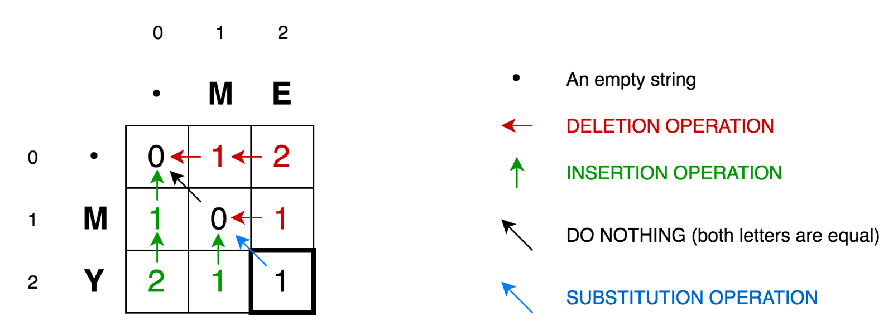
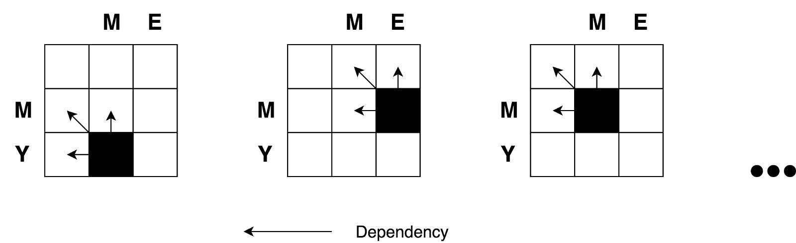

1.第一行表示从ME到空字符所要删除的字符的所以情况
2.第一列表示从空字符到MY所需要插入字符的所有情况
3.斜箭头表示相同字符不需要替换,不相同字符所有替换次数的所有情况function levenshteinDistance(a,b){
//生成表
const distanceMatix = Array(a.length + 1).fill(null).map(() => Array(b.length + 1).fill(null))
//第一行的修改次数
for(let i =0; i <= a.length; i++){
distanceMatix[i][0] = i;
}
//第一列的修改次数
for(let j = 0; j <= b.length; j++){
distanceMatix[0][j] = j;
}
for(let i = 1; i <= a.length; i++){
for(let j = 1; j <= b.length; j++){
let indicator = a[i - 1] === b[j - 1] ? 0 : 1
distanceMatix[i][j] = Math.min(
distanceMatix[i][j-1] + 1, //删除操作的总修改次数
distanceMatix[i-1][j] + 1,//插入修改的总修改次数
distanceMatix[i - 1][j - 1] + indicator //不一样就替换的次数
)
}
}
//
return distanceMatix[a.length][b.length]
}
console.log(levenshteinDistance('my name is a','y me s b'))